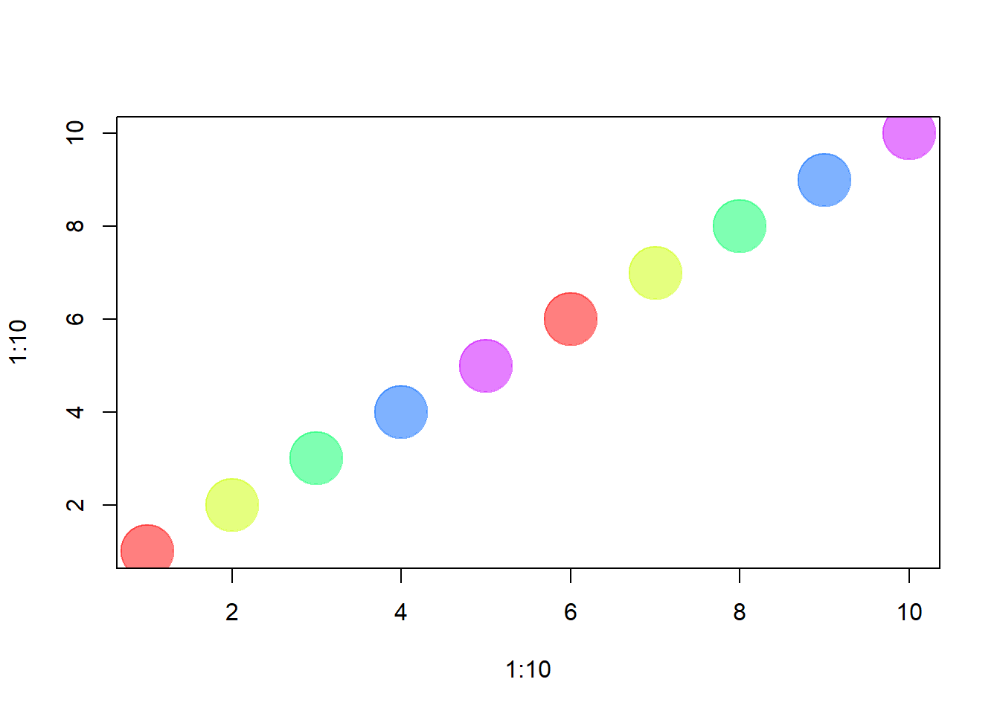

Chapter 2 R 기초 복습
네트워크에 대해 학습하기 전에, R의 간단한 과제와 원리에 대한 간단한 소개와 복습을 하고자 한다.
2.1 할당(Assignment)
assign() 함수, 치환 연산자( <-, 또는 =) 등을 이용하여 개체(objects)에 값(value)를 할당할 수 있다.
x <- 3 # 변수 x에 3을 대입
x # 식을 계산하고 결과를 출력## [1] 3y <- 4 # 변수 y에 4를 대입
y + 5 # 계산, y의 값은 4로 변함이 없다.## [1] 9z <- x + 17*y # 변수 z에 (x + 17 * y) 값을 대입
z # 계산한 결과를 출력## [1] 71rm(z) # 변수 z를 삭제: 객체 z의 삭제
z # 에러!## Error in eval(expr, envir, enclos): 객체 'z'를 찾을 수 없습니다2.2 값의 비교(Value comparisons)
<, >, <=, >=, ==(같음) and != (다름) 등의 기본 연산자를 사용할 수 있다. 비교 결과는 부울리안 값(TRUE 또는 FALSE, 간단히 T 또는 F)을 반환한다.
2 == 2 # 같은지 비교## [1] TRUE2 != 2 # 다른지 비교## [1] FALSEx <= y # 작거나 같은지 비교: "<", ">", 그리고 ">=" 등의 비교도 가능## [1] TRUE2.3 특별한 상수(Special constants)
다음과 같은 특별한 상수들이 있다:
- NA : 결측치 또는 정의되지 않은 데이터 (not available)
- NULL : 비어 있는 개체(e.g. null/empty lists)
- Inf 와 -Inf : 양의 무한대와 음의 무한대(infinity)
- NaN : 합리적으로 정의될 수 없는 결과 (not a number)
# NA - 결측치 또는 정의되지 않은 데이터
5 + NA # 수식에서 사용되면, 결과는 일반적으로 NA## [1] NAis.na(5 + NA) # is.na() 함수의 사용 : NA 인지 체크## [1] TRUE# NULL - 비어 있는 개체(e.g. null/empty lists)
10 + NULL # 비어 있는 개체 반환 (length zero)## numeric(0)is.null(NULL) # is.null() 함수의 사용 : NULL 인지 체크## [1] TRUEInf 와 -Inf는 양의 무한대와 음의 무한대(infinity)를 나타낸다. 수를 0으로 나누는 수 연산에 의해 반환될 수 있다:
5/0## [1] Infis.finite(5/0) # is.finite() 함수의 사용 : 결과가 유한한지 무한인지 체크## [1] FALSENaN (Not a Number) - 합리적으로 정의될 수 없는 연산의 결과로서, 0을 0으로 나눈 결과이다.
0/0## [1] NaNis.nan(0/0) # is.nan() 함수의 사용## [1] TRUE2.4 벡터(Vectors)
벡터는 R의 중요한 함수인 c() 함수로 요소들을 결합하여 생성될 수 있다.
v1 <- c(1, 5, 11, 33) # 수치 벡터, 길이(요소의 갯수)가 4
v2 <- c("hello","world") # 문자 벡터, 길이(요소의 갯수)가 2 (문자열 벡터)
v3 <- c(TRUE, TRUE, FALSE) # 논리 벡터, c(T, T, F)와 같음하나의 벡터에 서로 다른 유형의 요소들을 결합하면 최소의 제한적인 유형으로 요소들을 강제 변환한다:
v4 <- c(v1, v2, v3, "boo") # 모든 요소들이 문자형으로 변환됨벡터 생성의 다른 방법들:
# : 의 사용
v <- 1:7 # (from:to), c(1,2,3,4,5,6,7)와 같음.
# rep() 함수의 사용
v <- rep(0, 77) # 복사 : 0을 77개 복사, 변수 v는 0이 77개 있는 벡터
v <- rep(1:3, times=2) # 1:3을 두 번 복사
v <- rep(1:10, each=2) # 1:10의 각 요소를 두 번 복사
# seq() 함수의 사용
v <- seq(10,20,2) # 시퀀스 : 10과 20사이의 2 간격의 수
# 예
v1 <- 1:5 # c(1,2,3,4,5)와 같음
v2 <- rep(1,5) # c(1,1,1,1,1)과 같음 벡터의 길이 즉 벡터의 요소의 갯수는 length() 함수를 사용하여 확인한다.
length(v1)## [1] 5length(v2)## [1] 5요소 단위의 연산 :
v1 + v2 # 대응 요소별 더하기## [1] 2 3 4 5 6v1 + 1 # 각 요소에 1 더하기## [1] 2 3 4 5 6v1 * 2 # 각 요소를 2로 곱하기## [1] 2 4 6 8 10v1 + c(1,7) # 자동 채우기 : v1 + c(1, 7, 1, 7, 1)과 같음. ## Warning in v1 + c(1, 7): 두 객체의 길이가 서로 배수관계에 있지 않습니다## [1] 2 9 4 11 6 # Warning 메시지 출력산술 연산 : 다양한 함수를 이용하여 산술연산을 수행할 수 있다.
sum(v1) # 변수 v1의 모든 요소들을 더한다## [1] 15mean(v1) # 변수 v1 요소들의 평균## [1] 3sd(v1) # 변수 v1 요소들의 표준편차## [1] 1.581139cor(v1,v1*5) # 변수 v1과 v1*5 사이의 상관계수## [1] 1논리 연산 :
# 대소 비교
v1 > 2 # 벡터 v1의 각 요소를 2와 비교, 논리 벡터 반환## [1] FALSE FALSE TRUE TRUE TRUEv1==v2 # 벡터 v1과 v2 각각의 요소가 같은지 비교, 논리 벡터 반환## [1] TRUE FALSE FALSE FALSE FALSEv1!=v2 # 벡터 v1과 v2 각각의 요소가 서로 다른지 비교, 논리 벡터 반환, ## [1] FALSE TRUE TRUE TRUE TRUE # !(v1==v2)와 같음.
# 비교 연산의 결합 : OR(|), AND(&) => 요소별 비교의 결합
(v1>2) | (v2>0) # | 는 부울리안 OR, 벡터를 반환## [1] TRUE TRUE TRUE TRUE TRUE(v1>2) & (v2>0) # & 는 부울리안 AND, 벡터를 반환## [1] FALSE FALSE TRUE TRUE TRUE# 비교 연산의 결합 : OR(||), AND(&&) => 벡터 전체 비교의 결합
(v1>2) || (v2>0) # || 는 부울리안 OR, 단일 값 반환## [1] TRUE(v1>2) && (v2>0) # && 는 부울리안 AND, 단일 값 반환## [1] FALSE벡터 요소 :
v1[3] # 벡터 v1의 세 번째 요소 ; 3은 요소의 색인(index)## [1] 3v1[2:4] # 벡터 v1의 2, 3, 4 번째 요소## [1] 2 3 4v1[c(1,3)] # 1번째와 3번째 요소 - 색인도 벡터임을 주목## [1] 1 3v1[c(T,T,F,F,F)] # 색인이 논리 벡터 : TRUE인 요소 만 - 1, 2번째 요소## [1] 1 2v1[v1>3] # v1>3의 결과는 논리 벡터. 요소 중 값이 3보다 큰 요소 반환## [1] 4 5R에서는 벡터의 요소 번호가 1부터 시작함에 주의해야 한다. C 언어와 같이 색인 번호가 0부터 시작하는 언어를 사용해 본 사람들은 혼동이 될 수 있다.
벡터에 요소를 추가하려면, 다음과 같이 추가할 수 있다.
v1[6:10] <- 6:10
v1## [1] 1 2 3 4 5 6 7 8 9 10벡터에 요소의 갯수(길이)를 직접 할당할 수도 있다 :
length(v1) <- 15 # 11~15번째 요소는 결측치 NA로 추가된다
v1## [1] 1 2 3 4 5 6 7 8 9 10 NA NA NA NA NA2.5 Factors
factor는 범주형 데이터를 저장하기 위해 사용된다. (factor는 기본적으로 문자형 벡터이다.)
eye.col.vec <- c("brown", "green", "brown", "blue", "blue", "blue") # 문자 벡터
eye.col.vec## [1] "brown" "green" "brown" "blue" "blue" "blue"eye.col.fac <- factor(c("brown", "green", "brown", "blue", "blue", "blue")) # factor
eye.col.fac## [1] brown green brown blue blue blue
## Levels: blue brown greenR은 factor의 서로 다른 level들을 식별한다 - 즉, 단일 값들. 데이터는 내부적으로 정수로 저장되며, 각 숫자는 factor의 level에 대응한다. (문자 벡터보다 데이터 저장 공간이 절약되는 효과가 있다.)
# factor의 level 확인 : levels() 함수의 사용
levels(eye.col.fac) # factor(범주형 변수)의 levels들(단일 값)## [1] "blue" "brown" "green"# factor의 숫자 벡터 변환 : as.numeric() 함수의 사용
as.numeric(eye.col.fac) # 수치 값 : 1은 "blue", 2는 "brown", 3은 "green"## [1] 2 3 2 1 1 1# 문자 벡터의 숫자 벡터 변환
as.numeric(eye.col.vec) # eye.col.vec 벡터는 숫자 벡터로 변환이 안됨.## Warning: 강제형변환에 의해 생성된 NA 입니다## [1] NA NA NA NA NA NA# factor의 문자형 변환 : as.character() 함수의 사용
as.character(eye.col.fac) ## [1] "brown" "green" "brown" "blue" "blue" "blue"# 문자 벡터의 문자형 변환
as.character(eye.col.vec) ## [1] "brown" "green" "brown" "blue" "blue" "blue"2.6 행렬과 배열(Matrces & Arrays)
행렬(matrix)은 행과 열의 차원(dimension)을 갖는 벡터이다:
m <- rep(1, 20) # 1을 20번 복사. 변수 m은 모든 요소가 1인 벡터
dim(m) <- c(5,4) # 차원을 5 & 4로 설정 : 즉, m은 이제 5x4 행렬행렬의 생성 : matrix(): 함수의 사용
m <- matrix(data=1, nrow=5, ncol=4) # 위의 행렬과 동일.
# 1의 요소 값(자동 반복)을 갖는 5x4 행렬
m <- matrix(1,5,4) # 위의 행렬과 같음. (인수의 키워드 생략 가능)
# 행렬의 차원 확인 : dim() 함수의 사용
dim(m)## [1] 5 4벡터 결합에 의한 행렬 생성 : cbind() 함수와 rbind() 함수의 사용
m <- cbind(1:5, 5:1, 5:9) # 3개의 벡터들을 컬럼(column, 열) 단위로 결합. 5x3 행렬
m <- rbind(1:5, 5:1, 5:9) # 3개의 벡터들을 로(row, 행) 단위로 결합. 3x5 행렬행렬 요소의 선택 :
# 행렬의 생성
m <- matrix(1:10,10,10)
## 행렬 요소의 선택 : m[행번호, 열번호]
# 단일 요소의 선택
m[2,3] # 행렬 m의 2행, 3열 요소 - 단일 요소(cell)## [1] 2# 행/열의 선택
m[2,] # 행렬 m의 2번째 행 전체 : 벡터## [1] 2 2 2 2 2 2 2 2 2 2m[,2] # 행렬 m의 2번째 열 전체 : 벡터## [1] 1 2 3 4 5 6 7 8 9 10# 복수 개 행/열의 선택 : 부분 행렬(submatrix)
m[1:2,4:6] # 부분 행렬 : (1, 2)행과 (4, 5, 6) 열로 구성된 행렬## [,1] [,2] [,3]
## [1,] 1 1 1
## [2,] 2 2 2# 행/열의 제외 : '-'
m[-1,] # 1번째 행을 제외한 부분 행렬## [,1] [,2] [,3] [,4] [,5] [,6] [,7] [,8] [,9] [,10]
## [1,] 2 2 2 2 2 2 2 2 2 2
## [2,] 3 3 3 3 3 3 3 3 3 3
## [3,] 4 4 4 4 4 4 4 4 4 4
## [4,] 5 5 5 5 5 5 5 5 5 5
## [5,] 6 6 6 6 6 6 6 6 6 6
## [6,] 7 7 7 7 7 7 7 7 7 7
## [7,] 8 8 8 8 8 8 8 8 8 8
## [8,] 9 9 9 9 9 9 9 9 9 9
## [9,] 10 10 10 10 10 10 10 10 10 10행렬의 연산 :
# 1 행의 요소들이 1 열의 요소들과 같은가?
m[1,]==m[,1] ## [1] TRUE FALSE FALSE FALSE FALSE FALSE FALSE FALSE FALSE FALSE# 논리 행렬 : m의 요소 값이 3보다 크면 TRUE, 아니면 FALSE :
l <- m > 3
l## [,1] [,2] [,3] [,4] [,5] [,6] [,7] [,8] [,9] [,10]
## [1,] FALSE FALSE FALSE FALSE FALSE FALSE FALSE FALSE FALSE FALSE
## [2,] FALSE FALSE FALSE FALSE FALSE FALSE FALSE FALSE FALSE FALSE
## [3,] FALSE FALSE FALSE FALSE FALSE FALSE FALSE FALSE FALSE FALSE
## [4,] TRUE TRUE TRUE TRUE TRUE TRUE TRUE TRUE TRUE TRUE
## [5,] TRUE TRUE TRUE TRUE TRUE TRUE TRUE TRUE TRUE TRUE
## [6,] TRUE TRUE TRUE TRUE TRUE TRUE TRUE TRUE TRUE TRUE
## [7,] TRUE TRUE TRUE TRUE TRUE TRUE TRUE TRUE TRUE TRUE
## [8,] TRUE TRUE TRUE TRUE TRUE TRUE TRUE TRUE TRUE TRUE
## [9,] TRUE TRUE TRUE TRUE TRUE TRUE TRUE TRUE TRUE TRUE
## [10,] TRUE TRUE TRUE TRUE TRUE TRUE TRUE TRUE TRUE TRUE# 논리 벡터 l의 요소가 TRUE인 m의 요소 선택 : 즉, 요소 값이 3보가 큰 요소 선택
m[l]## [1] 4 5 6 7 8 9 10 4 5 6 7 8 9 10 4 5 6 7 8 9 10 4 5 6 7
## [26] 8 9 10 4 5 6 7 8 9 10 4 5 6 7 8 9 10 4 5 6 7 8 9 10 4
## [51] 5 6 7 8 9 10 4 5 6 7 8 9 10 4 5 6 7 8 9 10# 전치 행렬(transpose matrix) : t() 함수의 사용
t(m)## [,1] [,2] [,3] [,4] [,5] [,6] [,7] [,8] [,9] [,10]
## [1,] 1 2 3 4 5 6 7 8 9 10
## [2,] 1 2 3 4 5 6 7 8 9 10
## [3,] 1 2 3 4 5 6 7 8 9 10
## [4,] 1 2 3 4 5 6 7 8 9 10
## [5,] 1 2 3 4 5 6 7 8 9 10
## [6,] 1 2 3 4 5 6 7 8 9 10
## [7,] 1 2 3 4 5 6 7 8 9 10
## [8,] 1 2 3 4 5 6 7 8 9 10
## [9,] 1 2 3 4 5 6 7 8 9 10
## [10,] 1 2 3 4 5 6 7 8 9 10mt <- t(m) # mt는 m의 전치행렬 : 행과 열의 위치가 바뀐 행렬
# 행렬 곱 연산 : %*% 연산자 사용
m %*% mt # %*% 연산자는 행렬 곱## [,1] [,2] [,3] [,4] [,5] [,6] [,7] [,8] [,9] [,10]
## [1,] 10 20 30 40 50 60 70 80 90 100
## [2,] 20 40 60 80 100 120 140 160 180 200
## [3,] 30 60 90 120 150 180 210 240 270 300
## [4,] 40 80 120 160 200 240 280 320 360 400
## [5,] 50 100 150 200 250 300 350 400 450 500
## [6,] 60 120 180 240 300 360 420 480 540 600
## [7,] 70 140 210 280 350 420 490 560 630 700
## [8,] 80 160 240 320 400 480 560 640 720 800
## [9,] 90 180 270 360 450 540 630 720 810 900
## [10,] 100 200 300 400 500 600 700 800 900 1000m * m # * 는 행렬의 요소별 곱하기## [,1] [,2] [,3] [,4] [,5] [,6] [,7] [,8] [,9] [,10]
## [1,] 1 1 1 1 1 1 1 1 1 1
## [2,] 4 4 4 4 4 4 4 4 4 4
## [3,] 9 9 9 9 9 9 9 9 9 9
## [4,] 16 16 16 16 16 16 16 16 16 16
## [5,] 25 25 25 25 25 25 25 25 25 25
## [6,] 36 36 36 36 36 36 36 36 36 36
## [7,] 49 49 49 49 49 49 49 49 49 49
## [8,] 64 64 64 64 64 64 64 64 64 64
## [9,] 81 81 81 81 81 81 81 81 81 81
## [10,] 100 100 100 100 100 100 100 100 100 100배열(Arrays)은 2보다 큰 차원을 다룬다.
배열은 array() 함수로 생성할 수 있다:
a <- array(data=1:18, dim=c(3, 3, 2)) # 세 번째 차원을 갖는 배열 : 3x3x2
# 3x3 행렬이 두 개 있는 것
a <- array(1:18, c(3, 3, 2)) # 동일한 배열2.7 리스트(Lists)
리스트는 객체의 묶음이다. 단일 리스트는 모든 종류의 요소들(문자 벡터, 숫자 벡터, 행렬, 다른 리스트 등)을 포함할 수 있다. 리스트의 요소들은 보다 쉬은 접근을 위해 이름이 종종 부여된다.
l1 <- list(boo=v1, foo=v2, moo=v3, zoo="Animals!") # 요소별 이름을 갖는 리스트
l1## $boo
## [1] 1 2 3 4 5 6 7 8 9 10 NA NA NA NA NA
##
## $foo
## [1] 1 1 1 1 1
##
## $moo
## [1] TRUE TRUE FALSE
##
## $zoo
## [1] "Animals!"l2 <- list(v1, v2, v3, "Animals!") # 요소별 이름이 갖지 않는 리스트
l2## [[1]]
## [1] 1 2 3 4 5 6 7 8 9 10 NA NA NA NA NA
##
## [[2]]
## [1] 1 1 1 1 1
##
## [[3]]
## [1] TRUE TRUE FALSE
##
## [[4]]
## [1] "Animals!"빈(empty) 리스트 생성 : list() 함수 또는 NULL 사용
l3 <- list()
l4 <- NULL리스트 요소 접근 :
l1["boo"] # 한 개의 대괄호로 "boo" 요소에 접근: 그 결과는 리스트## $boo
## [1] 1 2 3 4 5 6 7 8 9 10 NA NA NA NA NAl1[["boo"]] # 이중 대괄호로 "boo" 요소에 접근 : 그 결과는 숫자 벡터 v1## [1] 1 2 3 4 5 6 7 8 9 10 NA NA NA NA NAl1[[1]] # 리스트의 첫 요소를 반환, 위와 동일 : 결과는 숫자 벡터 v1## [1] 1 2 3 4 5 6 7 8 9 10 NA NA NA NA NAl1$boo # 이중 대괄호와 마찬가지로, $ 연산자로 "boo" 요소에 접근## [1] 1 2 3 4 5 6 7 8 9 10 NA NA NA NA NA리스트에 요소 추가 :
l3[[1]] <- 11 # 빈 리스트 l3의 첫 번째 요소로 11을 추가
l3## [[1]]
## [1] 11l4[[3]] <- c(22, 23) # 빈 리스트 l4의 3번째 요소로 벡터 추가
l4## [[1]]
## NULL
##
## [[2]]
## NULL
##
## [[3]]
## [1] 22 23리스트 l4에 3번 째 요소를 추가했기 때문에, 첫 번째와 두 번째 요소가 생성되지만 그 값은 비어 있는 NULL이다.
l1[[5]] <- "More elements!" # 네 개의 요소를 갖는 리스트 l1에, 5번째 요소를 추가
l1## $boo
## [1] 1 2 3 4 5 6 7 8 9 10 NA NA NA NA NA
##
## $foo
## [1] 1 1 1 1 1
##
## $moo
## [1] TRUE TRUE FALSE
##
## $zoo
## [1] "Animals!"
##
## [[5]]
## [1] "More elements!"l1[[8]] <- 1:11 # 리스트 l1의 8번쨰 요소에 1:11 벡터 추가
l1## $boo
## [1] 1 2 3 4 5 6 7 8 9 10 NA NA NA NA NA
##
## $foo
## [1] 1 1 1 1 1
##
## $moo
## [1] TRUE TRUE FALSE
##
## $zoo
## [1] "Animals!"
##
## [[5]]
## [1] "More elements!"
##
## [[6]]
## NULL
##
## [[7]]
## NULL
##
## [[8]]
## [1] 1 2 3 4 5 6 7 8 9 10 11리스트 l1에 8번째 요소를 추가했지만, 6번째와 7번째는 그러지 않았다. 따라서 6번째와 7번째 요소는 비어있다(NULL).
l1$Something <- "A thing" # "Something"이라는 이름의 요소로 "A thing" 값을 추가
l1## $boo
## [1] 1 2 3 4 5 6 7 8 9 10 NA NA NA NA NA
##
## $foo
## [1] 1 1 1 1 1
##
## $moo
## [1] TRUE TRUE FALSE
##
## $zoo
## [1] "Animals!"
##
## [[5]]
## [1] "More elements!"
##
## [[6]]
## NULL
##
## [[7]]
## NULL
##
## [[8]]
## [1] 1 2 3 4 5 6 7 8 9 10 11
##
## $Something
## [1] "A thing"2.8 데이터 프레임(Data Frames)
데이터 프레임은 데이터 세트 테이블을 저장하는데 사용되는 특별한 종류의 리스트이다. 각 행은 데이터의 사례를 각 열은 변수로 생각하면 된다. 각 열은 벡터 또는 factor이다.
데이터 프레임의 생성 :
dfr1 <- data.frame( ID=1:4,
FirstName=c("John","Jim","Jane","Jill"),
Female=c(F,F,T,T),
Age=c(22,33,44,55) )
str(dfr1)## 'data.frame': 4 obs. of 4 variables:
## $ ID : int 1 2 3 4
## $ FirstName: chr "John" "Jim" "Jane" "Jill"
## $ Female : logi FALSE FALSE TRUE TRUE
## $ Age : num 22 33 44 55dfr1$FirstName # dfr1의 두 번째 컬럼 접근## [1] "John" "Jim" "Jane" "Jill"여기서, R(R 4.0 이전 버전)은 dfr1$FirstName 은 범주형 변수라고 생각하고, 문자 벡터가 아닌 factor 처럼 처리할 것이라는 점을 주목하라. as.vector() 함수를 이용하여 R에게 FirstName을 factor가 아닌 벡터로 처리하게 하자 :
dfr1$FirstName <- as.vector(dfr1$FirstName) # as.factor() : factor로 변환다른 방법으로, stringsAsFactors=FALSE를 사용하여 처음부터 factor로 처리하지 않도록 할 수 있다. (R 4.0 이후에는 기본적으로 이렇게 설정되어 있다.)
dfr2 <- data.frame(FirstName=c("John","Jim","Jane","Jill"),
stringsAsFactors=F)
dfr2$FirstName # Factor가 아님 : 성공## [1] "John" "Jim" "Jane" "Jill"데이터 프레임의 요소 접근 :
# 행/열 접근
dfr1[1,] # 첫 번째 행, 모든 열## ID FirstName Female Age
## 1 1 John FALSE 22dfr1[,1] # 첫 번째 열, 모든 행## [1] 1 2 3 4# Age 이름의 열 접근
dfr1$Age # Age 열, 모든 행## [1] 22 33 44 55dfr1[1:2,3:4] # 1행, 2행 그리고 3열과 4열 - "john"과 "jim"의 "gender"와 "age"## Female Age
## 1 FALSE 22
## 2 FALSE 33dfr1[c(1,3),] # 1행과 3행 그리고 모든 열## ID FirstName Female Age
## 1 1 John FALSE 22
## 3 3 Jane TRUE 44데이터에서 30세 이상인 사람들의 이름(FirstName) 확인 :
dfr1[dfr1$Age>30, 2]## [1] "Jim" "Jane" "Jill"데이터에서 모든 여성(Female == TRUE)의 평균 나이(mean(Age)) 확인 :
females <- dfr1$Female==TRUE
ages_of_females <- dfr1[females, 4]
mean (ages_of_females)## [1] 49.52.9 흐름 제어와 반복 구문(Flow Control and loops)
R에서의 제어와 반복은 상당히 직접적이다(아래 참고). 코드 블럭이 실행될 지 여부와 반복 횟수를 결정한다. R에서의 코드 블럭은 중괄호({}) 안에 위치한다.
## 흐름 제어 : if() 구문
# if (조건식) expr1 else expr2
x <- 5; y <- 10
if (x==0) y <- 0 else y <- y/x #
y## [1] 2## 반복 구문 : for () 구문
# for (variable in sequence) expr
ASum <- 0; AProd <- 1
for (i in 1:x)
{
ASum <- ASum + i
AProd <- AProd * i
}
ASum # sum(1:x)과 같음## [1] 15AProd # prod(1:x)과 같음## [1] 120## 반복 구문 : while () 구문
# while (condintion) expr
while (x > 0) {print(x); x <- x-1;}## [1] 5
## [1] 4
## [1] 3
## [1] 2
## [1] 1## 반복 구문 : repeat() 구문
# repeat expr, use break to exit the loop
repeat { print(x); x <- x+1; if (x>10) break}## [1] 0
## [1] 1
## [1] 2
## [1] 3
## [1] 4
## [1] 5
## [1] 6
## [1] 7
## [1] 8
## [1] 9
## [1] 102.10 R 플롯과 색 지정
대부분의 R 함수에서 색 이름, 16진수, RGB 값 등을 이용할 수 있다. 단순한 base 패키지의 R 차트에서 x와 y는 점의 좌표를 pch는 점의 모양, cex는 점의 크기, 그리고 col은 색이다. R의 base 패키지에서의 차트 작성을 위한 파라미터를 확인하려면 console 창에 ?par를 입력한다.
plot(x=1:10, y=rep(5,10), pch=19, cex=3, col="dark red") # 색 이름 지정
points(x=1:10, y=rep(6, 10), pch=19, cex=3, col="557799") # hex
points(x=1:10, y=rep(4, 10), pch=19, cex=3, col=rgb(.25, .5, .3)) # RGB 값 지정
여기서 RGB 값은 0과 1 사이의 값이다. 이 값이 R의 기본값이지만, rgb(10, 100, 100, maxColorValue=255) 를 사용하면, 0-255 까지의 값으로 설정할 수 있다.
alpha (0-1 범위 값) 파라미터를 이용하여 요소의 불투명도/투명도를 설정할 수 있다.
plot(x=1:5, y=rep(5,5), pch=19, cex=12,
col=rgb(.25, .5, .3, alpha=.5), xlim=c(0,6)) 16진수로 색깔을 표현한다면, grDevices 패키지의 adjustcolor를 사용하여 투명도 alpha를 설정할 수 있다. 그래픽 파라미터로 par() 함수를 사용하여 차트의 배경을 회색(gray)으로 설정할 수 있다.
par(bg="gray40")
col.tr <- grDevices::adjustcolor("557799", alpha=0.7)
plot(x=1:5, y=rep(5,5), pch=19, cex=12, col=col.tr, xlim=c(0,6)) 
R에 내장된 색 이름을 사용하고자 한다면, 사용할 수 있는 색의 모든 이름은 다음과 같은 방법으로 확인할 수 있다:
colors() # 모든 색 이름을 보여준다## [1] "white" "aliceblue" "antiquewhite"
## [4] "antiquewhite1" "antiquewhite2" "antiquewhite3"
## [7] "antiquewhite4" "aquamarine" "aquamarine1"
## [10] "aquamarine2" "aquamarine3" "aquamarine4"
## [13] "azure" "azure1" "azure2"
## [16] "azure3" "azure4" "beige"
## [19] "bisque" "bisque1" "bisque2"
## [22] "bisque3" "bisque4" "black"
## [25] "blanchedalmond" "blue" "blue1"
## [28] "blue2" "blue3" "blue4"
## [31] "blueviolet" "brown" "brown1"
## [34] "brown2" "brown3" "brown4"
## [37] "burlywood" "burlywood1" "burlywood2"
## [40] "burlywood3" "burlywood4" "cadetblue"
## [43] "cadetblue1" "cadetblue2" "cadetblue3"
## [46] "cadetblue4" "chartreuse" "chartreuse1"
## [49] "chartreuse2" "chartreuse3" "chartreuse4"
## [52] "chocolate" "chocolate1" "chocolate2"
## [55] "chocolate3" "chocolate4" "coral"
## [58] "coral1" "coral2" "coral3"
## [61] "coral4" "cornflowerblue" "cornsilk"
## [64] "cornsilk1" "cornsilk2" "cornsilk3"
## [67] "cornsilk4" "cyan" "cyan1"
## [70] "cyan2" "cyan3" "cyan4"
## [73] "darkblue" "darkcyan" "darkgoldenrod"
## [76] "darkgoldenrod1" "darkgoldenrod2" "darkgoldenrod3"
## [79] "darkgoldenrod4" "darkgray" "darkgreen"
## [82] "darkgrey" "darkkhaki" "darkmagenta"
## [85] "darkolivegreen" "darkolivegreen1" "darkolivegreen2"
## [88] "darkolivegreen3" "darkolivegreen4" "darkorange"
## [91] "darkorange1" "darkorange2" "darkorange3"
## [94] "darkorange4" "darkorchid" "darkorchid1"
## [97] "darkorchid2" "darkorchid3" "darkorchid4"
## [100] "darkred" "darksalmon" "darkseagreen"
## [103] "darkseagreen1" "darkseagreen2" "darkseagreen3"
## [106] "darkseagreen4" "darkslateblue" "darkslategray"
## [109] "darkslategray1" "darkslategray2" "darkslategray3"
## [112] "darkslategray4" "darkslategrey" "darkturquoise"
## [115] "darkviolet" "deeppink" "deeppink1"
## [118] "deeppink2" "deeppink3" "deeppink4"
## [121] "deepskyblue" "deepskyblue1" "deepskyblue2"
## [124] "deepskyblue3" "deepskyblue4" "dimgray"
## [127] "dimgrey" "dodgerblue" "dodgerblue1"
## [130] "dodgerblue2" "dodgerblue3" "dodgerblue4"
## [133] "firebrick" "firebrick1" "firebrick2"
## [136] "firebrick3" "firebrick4" "floralwhite"
## [139] "forestgreen" "gainsboro" "ghostwhite"
## [142] "gold" "gold1" "gold2"
## [145] "gold3" "gold4" "goldenrod"
## [148] "goldenrod1" "goldenrod2" "goldenrod3"
## [151] "goldenrod4" "gray" "gray0"
## [154] "gray1" "gray2" "gray3"
## [157] "gray4" "gray5" "gray6"
## [160] "gray7" "gray8" "gray9"
## [163] "gray10" "gray11" "gray12"
## [166] "gray13" "gray14" "gray15"
## [169] "gray16" "gray17" "gray18"
## [172] "gray19" "gray20" "gray21"
## [175] "gray22" "gray23" "gray24"
## [178] "gray25" "gray26" "gray27"
## [181] "gray28" "gray29" "gray30"
## [184] "gray31" "gray32" "gray33"
## [187] "gray34" "gray35" "gray36"
## [190] "gray37" "gray38" "gray39"
## [193] "gray40" "gray41" "gray42"
## [196] "gray43" "gray44" "gray45"
## [199] "gray46" "gray47" "gray48"
## [202] "gray49" "gray50" "gray51"
## [205] "gray52" "gray53" "gray54"
## [208] "gray55" "gray56" "gray57"
## [211] "gray58" "gray59" "gray60"
## [214] "gray61" "gray62" "gray63"
## [217] "gray64" "gray65" "gray66"
## [220] "gray67" "gray68" "gray69"
## [223] "gray70" "gray71" "gray72"
## [226] "gray73" "gray74" "gray75"
## [229] "gray76" "gray77" "gray78"
## [232] "gray79" "gray80" "gray81"
## [235] "gray82" "gray83" "gray84"
## [238] "gray85" "gray86" "gray87"
## [241] "gray88" "gray89" "gray90"
## [244] "gray91" "gray92" "gray93"
## [247] "gray94" "gray95" "gray96"
## [250] "gray97" "gray98" "gray99"
## [253] "gray100" "green" "green1"
## [256] "green2" "green3" "green4"
## [259] "greenyellow" "grey" "grey0"
## [262] "grey1" "grey2" "grey3"
## [265] "grey4" "grey5" "grey6"
## [268] "grey7" "grey8" "grey9"
## [271] "grey10" "grey11" "grey12"
## [274] "grey13" "grey14" "grey15"
## [277] "grey16" "grey17" "grey18"
## [280] "grey19" "grey20" "grey21"
## [283] "grey22" "grey23" "grey24"
## [286] "grey25" "grey26" "grey27"
## [289] "grey28" "grey29" "grey30"
## [292] "grey31" "grey32" "grey33"
## [295] "grey34" "grey35" "grey36"
## [298] "grey37" "grey38" "grey39"
## [301] "grey40" "grey41" "grey42"
## [304] "grey43" "grey44" "grey45"
## [307] "grey46" "grey47" "grey48"
## [310] "grey49" "grey50" "grey51"
## [313] "grey52" "grey53" "grey54"
## [316] "grey55" "grey56" "grey57"
## [319] "grey58" "grey59" "grey60"
## [322] "grey61" "grey62" "grey63"
## [325] "grey64" "grey65" "grey66"
## [328] "grey67" "grey68" "grey69"
## [331] "grey70" "grey71" "grey72"
## [334] "grey73" "grey74" "grey75"
## [337] "grey76" "grey77" "grey78"
## [340] "grey79" "grey80" "grey81"
## [343] "grey82" "grey83" "grey84"
## [346] "grey85" "grey86" "grey87"
## [349] "grey88" "grey89" "grey90"
## [352] "grey91" "grey92" "grey93"
## [355] "grey94" "grey95" "grey96"
## [358] "grey97" "grey98" "grey99"
## [361] "grey100" "honeydew" "honeydew1"
## [364] "honeydew2" "honeydew3" "honeydew4"
## [367] "hotpink" "hotpink1" "hotpink2"
## [370] "hotpink3" "hotpink4" "indianred"
## [373] "indianred1" "indianred2" "indianred3"
## [376] "indianred4" "ivory" "ivory1"
## [379] "ivory2" "ivory3" "ivory4"
## [382] "khaki" "khaki1" "khaki2"
## [385] "khaki3" "khaki4" "lavender"
## [388] "lavenderblush" "lavenderblush1" "lavenderblush2"
## [391] "lavenderblush3" "lavenderblush4" "lawngreen"
## [394] "lemonchiffon" "lemonchiffon1" "lemonchiffon2"
## [397] "lemonchiffon3" "lemonchiffon4" "lightblue"
## [400] "lightblue1" "lightblue2" "lightblue3"
## [403] "lightblue4" "lightcoral" "lightcyan"
## [406] "lightcyan1" "lightcyan2" "lightcyan3"
## [409] "lightcyan4" "lightgoldenrod" "lightgoldenrod1"
## [412] "lightgoldenrod2" "lightgoldenrod3" "lightgoldenrod4"
## [415] "lightgoldenrodyellow" "lightgray" "lightgreen"
## [418] "lightgrey" "lightpink" "lightpink1"
## [421] "lightpink2" "lightpink3" "lightpink4"
## [424] "lightsalmon" "lightsalmon1" "lightsalmon2"
## [427] "lightsalmon3" "lightsalmon4" "lightseagreen"
## [430] "lightskyblue" "lightskyblue1" "lightskyblue2"
## [433] "lightskyblue3" "lightskyblue4" "lightslateblue"
## [436] "lightslategray" "lightslategrey" "lightsteelblue"
## [439] "lightsteelblue1" "lightsteelblue2" "lightsteelblue3"
## [442] "lightsteelblue4" "lightyellow" "lightyellow1"
## [445] "lightyellow2" "lightyellow3" "lightyellow4"
## [448] "limegreen" "linen" "magenta"
## [451] "magenta1" "magenta2" "magenta3"
## [454] "magenta4" "maroon" "maroon1"
## [457] "maroon2" "maroon3" "maroon4"
## [460] "mediumaquamarine" "mediumblue" "mediumorchid"
## [463] "mediumorchid1" "mediumorchid2" "mediumorchid3"
## [466] "mediumorchid4" "mediumpurple" "mediumpurple1"
## [469] "mediumpurple2" "mediumpurple3" "mediumpurple4"
## [472] "mediumseagreen" "mediumslateblue" "mediumspringgreen"
## [475] "mediumturquoise" "mediumvioletred" "midnightblue"
## [478] "mintcream" "mistyrose" "mistyrose1"
## [481] "mistyrose2" "mistyrose3" "mistyrose4"
## [484] "moccasin" "navajowhite" "navajowhite1"
## [487] "navajowhite2" "navajowhite3" "navajowhite4"
## [490] "navy" "navyblue" "oldlace"
## [493] "olivedrab" "olivedrab1" "olivedrab2"
## [496] "olivedrab3" "olivedrab4" "orange"
## [499] "orange1" "orange2" "orange3"
## [502] "orange4" "orangered" "orangered1"
## [505] "orangered2" "orangered3" "orangered4"
## [508] "orchid" "orchid1" "orchid2"
## [511] "orchid3" "orchid4" "palegoldenrod"
## [514] "palegreen" "palegreen1" "palegreen2"
## [517] "palegreen3" "palegreen4" "paleturquoise"
## [520] "paleturquoise1" "paleturquoise2" "paleturquoise3"
## [523] "paleturquoise4" "palevioletred" "palevioletred1"
## [526] "palevioletred2" "palevioletred3" "palevioletred4"
## [529] "papayawhip" "peachpuff" "peachpuff1"
## [532] "peachpuff2" "peachpuff3" "peachpuff4"
## [535] "peru" "pink" "pink1"
## [538] "pink2" "pink3" "pink4"
## [541] "plum" "plum1" "plum2"
## [544] "plum3" "plum4" "powderblue"
## [547] "purple" "purple1" "purple2"
## [550] "purple3" "purple4" "red"
## [553] "red1" "red2" "red3"
## [556] "red4" "rosybrown" "rosybrown1"
## [559] "rosybrown2" "rosybrown3" "rosybrown4"
## [562] "royalblue" "royalblue1" "royalblue2"
## [565] "royalblue3" "royalblue4" "saddlebrown"
## [568] "salmon" "salmon1" "salmon2"
## [571] "salmon3" "salmon4" "sandybrown"
## [574] "seagreen" "seagreen1" "seagreen2"
## [577] "seagreen3" "seagreen4" "seashell"
## [580] "seashell1" "seashell2" "seashell3"
## [583] "seashell4" "sienna" "sienna1"
## [586] "sienna2" "sienna3" "sienna4"
## [589] "skyblue" "skyblue1" "skyblue2"
## [592] "skyblue3" "skyblue4" "slateblue"
## [595] "slateblue1" "slateblue2" "slateblue3"
## [598] "slateblue4" "slategray" "slategray1"
## [601] "slategray2" "slategray3" "slategray4"
## [604] "slategrey" "snow" "snow1"
## [607] "snow2" "snow3" "snow4"
## [610] "springgreen" "springgreen1" "springgreen2"
## [613] "springgreen3" "springgreen4" "steelblue"
## [616] "steelblue1" "steelblue2" "steelblue3"
## [619] "steelblue4" "tan" "tan1"
## [622] "tan2" "tan3" "tan4"
## [625] "thistle" "thistle1" "thistle2"
## [628] "thistle3" "thistle4" "tomato"
## [631] "tomato1" "tomato2" "tomato3"
## [634] "tomato4" "turquoise" "turquoise1"
## [637] "turquoise2" "turquoise3" "turquoise4"
## [640] "violet" "violetred" "violetred1"
## [643] "violetred2" "violetred3" "violetred4"
## [646] "wheat" "wheat1" "wheat2"
## [649] "wheat3" "wheat4" "whitesmoke"
## [652] "yellow" "yellow1" "yellow2"
## [655] "yellow3" "yellow4" "yellowgreen"grep("blue", colors(), value=T) # 색 이름에 "blue"가 포함된 색들## [1] "aliceblue" "blue" "blue1" "blue2"
## [5] "blue3" "blue4" "blueviolet" "cadetblue"
## [9] "cadetblue1" "cadetblue2" "cadetblue3" "cadetblue4"
## [13] "cornflowerblue" "darkblue" "darkslateblue" "deepskyblue"
## [17] "deepskyblue1" "deepskyblue2" "deepskyblue3" "deepskyblue4"
## [21] "dodgerblue" "dodgerblue1" "dodgerblue2" "dodgerblue3"
## [25] "dodgerblue4" "lightblue" "lightblue1" "lightblue2"
## [29] "lightblue3" "lightblue4" "lightskyblue" "lightskyblue1"
## [33] "lightskyblue2" "lightskyblue3" "lightskyblue4" "lightslateblue"
## [37] "lightsteelblue" "lightsteelblue1" "lightsteelblue2" "lightsteelblue3"
## [41] "lightsteelblue4" "mediumblue" "mediumslateblue" "midnightblue"
## [45] "navyblue" "powderblue" "royalblue" "royalblue1"
## [49] "royalblue2" "royalblue3" "royalblue4" "skyblue"
## [53] "skyblue1" "skyblue2" "skyblue3" "skyblue4"
## [57] "slateblue" "slateblue1" "slateblue2" "slateblue3"
## [61] "slateblue4" "steelblue" "steelblue1" "steelblue2"
## [65] "steelblue3" "steelblue4"많은 경우, 많은 대비색 또는 복수 색상의 색들을 필요로 한다. R은 이를 위해 그것들을 생성할 수 있는 미리 지정된 팔레트(palette)로 처리한다. 예를 들면,
pal1 <- heat.colors(5, alpha=1) # 'heat' palette에서 5가지 색, alpha=1 -> 불투명
pal2 <- rainbow(5, alpha=.5) # 'heat' palette에서 5가지 색, alpha=0.5 -> 투명
plot(x=1:10, y=1:10, pch=19, cex=5, col=pal1)
plot(x=1:10, y=1:10, pch=19, cex=5, col=pal2)
colorRampPalette를 사용하여 그래디언트(gradient)를 생성할 수도 있다. colorRampPalette는 우리가 필요로 하는 만큼의 색들을 그 palette에서 생성하는데 사용할 수 있는 함수를 반환한다.
palf <- colorRampPalette(c("gray80", "dark red"))
plot(x=10:1, y=1:10, pch=19, cex=5, col=palf(10)) colorRampPalette에 투명도를 추가하기 위해서는 alpha=TRUE 파라미터를 사용해야 한다.
palf <- colorRampPalette(c(rgb(1,1,1, .2),rgb(.8,0,0, .7)), alpha=TRUE)
plot(x=10:1, y=1:10, pch=19, cex=5, col=palf(10)) 
2.11 R 문제 해결
지금까지 R을 사용하면서 많은 (그리고 종종 매우 창의적으로) 에러를 만드는 동안, 종종 저지르는 세 가지의 간단한 것들이 있다. 이를 정리하면 다음과 같다:
- 대문자(Capitalization)의 사용. R은 대소문자를 구분한다. 예를 들어, 그래프의 노드 이름으로 “Jack”과 “jack”은 다르다. 함수
rowSums는rowsums또는RowSums로 사용하면 작동하지 않을 것이다. - 개체 클래스(Object class). 많은 함수들이 인수로 다양한 것들을 처리할 수 있지만, 숫자 벡터 대신에 문자 벡터나 factor를 요구하거나, 또는 데이터 프레임 대신에 행렬을 요구할 수 있다. 함수들은 때때로 기대치 않은 형식으로 결과를 반활하기도 할 것이다.
- 패키지(Package namespaces). 종종 같은 이름을 갖는 함수들을 여러 개의 패키지가 포함하고 있을 때 문제들이 발생한다. R은 이에 대해 경고한다. “The following object(s) are masked from ‘package:igraph’ as you load a package.” 이를 처리하기 위한 한 방법은 함수를 사용할 때
::를 이용하여 패키지를 명시하는 것이다. 예를 들어,blash()라는 함수가 패키지A와 패키지B에 존재한다면,A::blash()와B::blash()등과 같이 함수를 호출할 수 있다. 문제가 좀 더 복잡한 다른 경우에는 패키지를 특별한 순서로 불러오거나 아니면 패키지들을 함께 사용하지 않는 것이다. 예를 들어,igraph패키지와statnet패키지는 동시에 불러왔을 때 여러 문제들을 야기한다. 이때, 하나의 패키지를 불러오기 전에 다른 패키지를detach()함수로 메모리에서 제거하는 것이 최상의 방법이다.
library(igraph) # 패키지 불러오기##
## Attaching package: 'igraph'## The following objects are masked from 'package:stats':
##
## decompose, spectrum## The following object is masked from 'package:base':
##
## union detach(package:igraph) # 패키지 메모리에서 제거하기보다 더 많은 문제해결을 위해서는, try(), tryCatch(), 그리고 debug() 등을 이용할 수 있다.